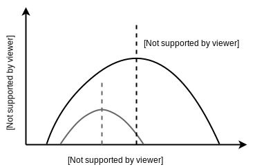
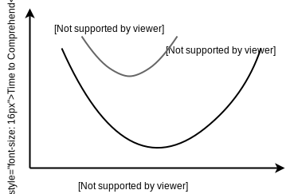

Abstraction and Comprehension
I’ve been thinking a lot about the notations we use for programming as I’ve been teaching myself R and I have a theory. When we use a low-level language, we incur the cognitive load of assembling micro-steps into something more meaningful; when we use a high-level language, we incur a similar load translating functions of functions of functions (or meta-classes templated on object factories) into actual operations on actual data.
More experienced programmers are more capable at both ends of the curve, but that’s not the only thing that changes. If a novice’s comfort curve looks like this:
then an expert’s comfort curve looks like this:

Experts don’t just understand more at all levels of abstraction; their preferred level has also shifted so that √x2+y2 is actually more readable than the medieval expression “the side of the square whose area is the sum of the areas of the two squares whose sides are given by the first part and the second part”.
One implication of this is that for any given task, the software that is quickest for a novice to comprehend will almost certainly be different from the software that an expert can understand most quickly:

This brings us back, as so many things do, to Caulfield’s chorus of explanations. If programmers at two different levels are best served by two different solutions to a problem, then we need three lessons: one describing Solution N to the novice, one describing Solution E to the expert, and a third that explains Solution E to the novice in terms of operations in Solution N to help them move out along the axis of abstraction. (We don’t need a lesson explaining Solution N to the expert, though they made need to be reminded that wordy stepwise solutions aren’t necessarily wrong and shouldn’t be sneered at.)
In an ideal world, our tools would automatically re-represent programs at different levels, so that with a click of a button we could view our code as either:
hosts <- links.map(a => a.href.split(':')[1].split('/')[0]).unique()
or:
hosts <- []
for (each a in links) do
temp <- attr(a, 'href').split(':')[1].split('/')[0]
if (not (temp in hosts)) do
hosts.append(temp)
end
end
just as we could change the colors used for syntax highlighting or the depth to which loop bodies are indented. I don’t think that will be possible until code is stored as a data structure, i.e., until programmers adopt the same model-view separation that they have been using in the tools they have built for everyone else for the last thirty-five years. I’m as likely to get a pony for Christmas as I am to see that in my lifetime, so for now I’ll focus on ways to clearly identify who lessons are for and to make sure that we’re teaching everyone at their most comfortable level of abstraction rather than our own.
Later: see also the next post in this series.